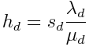
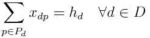
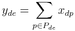
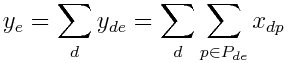
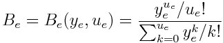
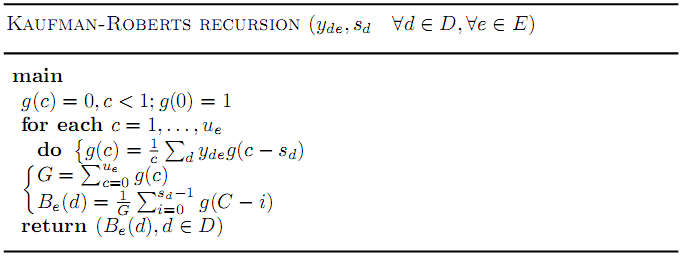
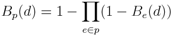
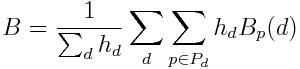

Contents
Introduction
In circuit-switched networks, a traffic demand d is a source of connection requests between the origin and the destination nodes of the demmand. When the connection requests are accepted by the network, they occupy a fixed amount of capacity sd, in each of the traversed links, for the whole duration of the connection. If the connection request is not accepted, we say that the connection is blocked. We assume that the link capacities u_e are integer numbers, measured in the same units as rd.
Blocking performance metrics estimate the probabilities that connections are blocked, which is a key measure of Quality of Service in the network. In this section we describe a simplified model to estimate the blocking probability for a link,a route, and an average number in the network. In this report, we follow the assumptions commonly termed as the load sharing model [1, 2], adapting them to our notation, and extending it to consider also multiclass traffic.
Traffic model
Each demand d is a source of connection requests between nodes a(d) and b(d). All the accepted connections associated to the demand reserve the capacity sd in each traversed link. We assume sd is an integer number. When sd=1 for all the demands, we say that the traffic in the network is monoclass. Otherwise, the traffic is multiclass.
For each demand d, the arrival of new connections requests follow a Poisson distribution with average of λd connections/second. The duration of each connection (if accepted) is also random, with an exponential distribution of average μd-1 seconds/connection. The average traffic generated by the demand d (measured in the same units as sd and ue) is given by:

Connection routing: the load sharing model
Let p denote a path in the network between nodes a(d) and b(d). Then, the amount of traffic from demand d that is offered to path p is given by xdp, measured in the same units of hd. That is, if Pd is the set of paths that carry traffic from demand d, then:

In the connection routing we apply the load sharing model. According to this model, each connection request from a demand d chooses randomly a path p among the paths in Pd. The probability of choosing a path p is proportional to the traffic carried, and given by xdp/hd. After choosing the path p, the connection is accepted if all the links in p have enough spare capacity (sd units or more). If not, the connection is blocked. This means that there is no attempt to carry the connection in other possible routes in Pd. This is the distinguishing trait of the so-called load sharing model [1, 2]. Note that thanks to this assumption, there is no overflow traffic in the network (traffic offered to a route, that if blocked, and overflows to an alternate route).
Blocking probabilities
We assume that the traffic offered to a link e is equal to the sum of the traffics offered to all the paths that traverse the link. We denote as Pde, the set of paths that carry traffic of demand d (∈ Pd), and that traverse link e. Then, we denote as yde the traffic of demand d that traverses link e.

The total amount of traffic offered to a link is given by:

We assume now that the arrivals of connection requests to each link are Poisson processes, independent link-by-link. Thanks to this, we can calculate the blocking probability of the traffic in each link as follows:
-
Monoclass traffic: If the traffic is monoclass (sd=1, ∀d), all the routes traversing the link observe the same blocking probability Be in the link e. This is given by the Erlang-B formula:

Note that the blocking probability in the link depends only on the total amount of traffic offered to the link ye, and the link capacity ue.
-
Multiclass traffic: If the traffic is multiclass, the connection requests with different sd values (amount of resources to reserve), have different link blocking probabilities. Then, the link blocking probability depends on the demand. We denote as $B_e(d)$ the blocking probability observed by the traffic of demand d, when offered to link e. The Be(d) probabilities are calculated using the Kaufman-Roberts recursion [3, 4] (which provides the same results as the Erlang-B, when applied to monoclass traffic):

Click here to see the link blocking probabilities.
Path blocking probabilities
For the calculation of the path blocking probabilities, we assume that all the arrival processes to the links are statistically independent. Then, given a path p carrying traffic of demand d, the path blocking probability Bp(d) is given by:

Naturally, if the traffic is monoclass, the notation Be(d) refers to Be.
Click here to see the blocking probabilities for each route of each demand.
Average network blocking probability
We compute the average network blocking probability B, as the weighted average of the blocking probabilites for each route, according to the expression:

Click here to see some network-wide blocking information.
Information tables
Link blocking probabilities
#linkBlockingProbabilitiesTable#
Path blocking probabilities
#pathBlockingProbabilitiesTable#
Network-wide blocking information
#networkBlockingProbabilityTable#
References
[1] A. Girard, Routing and dimensioning in circuit-switched networks, Addison-Wesley, 1990.
[2] K.W. Ross, Multiservice loss models for broadband telecommunication networks, Springer, 1995.
[3] J. Kaufman, "Blocking in a Shared Resource Environment", IEEE Transactions on Communications, vol. 29, no. 10, pp. 1474-1481, 1981.
[4] J.W. Roberts, "A service system with heterogeneous user requirements", in Proceedings of the International Conference on Performance Data Communication Systems and Their Applications, pp. 423-431, 1981.